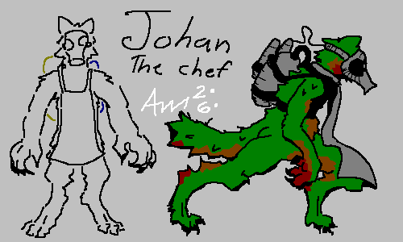
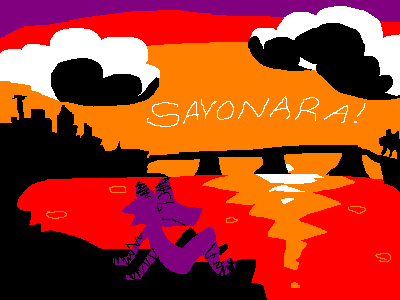
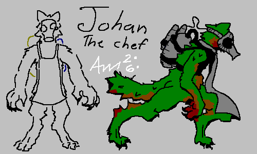
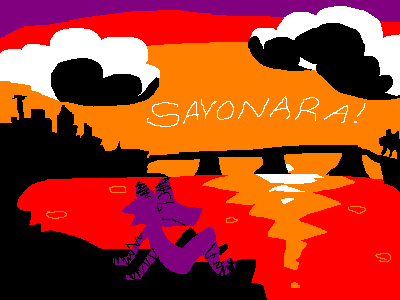
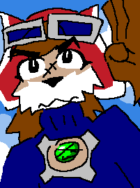
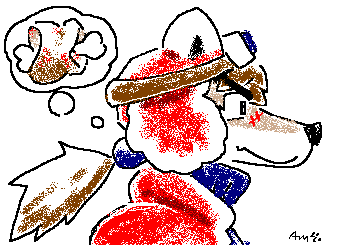
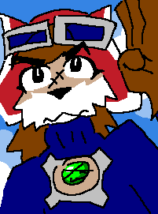
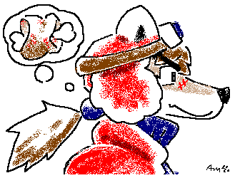

|
||||||||||||||||||||||||
WHAT AM I LOOKING AT?
Hello! This is my website. I wanted to make a website because it's a convenient place to show off my Pixel Art!
There's other stuff here too. Enjoy!
|
||||||||||||||||||||||||
A
|
P
|
Where to Find Me
You can find me on sooo many websites. Here are my favorites:
|
||||||||||||||||||||||
my picksel artes : DArt Dump! 


 



 



FUN BUTTON
|
||||||||||||||||||||||||
M
|
work in progres... check back later.  musescore.com musescore.com
|
|||||||||||||||||||||||
F
|
L
|
|
||||||||||||||||||||||
E
|
Filipino Fried Rice Honey-Glazed Salmon over Rice Thai Green Curry Eggplant Parmesian Vietnamese Coffee (for dessert. of course) |
|||||||||||||||||||||||
N
|
https://gail.com This website has information about www.gail.com
https://fantasyanime.com/legacy/earthb_down.htm This is EarthBound Romhacks; Navigate "up" for more general Earthbound Information https://solatorobo.com Obviously. Visit solatorobo.com and learn more about Solatorobo! It is your life now. https://www.derekyu.com I love Spelunky. I think Derek Yu is pretty neat, too. This website chronicles our marriage |
|||||||||||||||||||||||
U
|
THIS IS MY FAVORITE COLORSOME LITERATUREThis is a rough draft for some story about a greenhouse under the arctic sea. [INVESTIGATE]Here's a strange article I found in the papers... [INVESTIGATE] GAME HACKS GAME HACKING LE EPIC CUSTOM GAME FILESHalf-Life test map -- "sandbrickbar.bsp" <--automatic downloadCookie Clicker save file "firestarVonSausageBakery.txt" <--automatic download I LIKE THESE ARTISTS YOU WILL LIKE THEM TOO. YOU WILL LIKE THEM- Pochowek is my favorite twitter furry artist. He is from Poland. He discusses high literature and philosophy in his subversively scrappy artwork. SCREAM IF YOU LOVE POLAND!!!!!!!!- xxx_acidNeko_xxx is my 2nd favorite. He is on tumblr actually. He draws very colorful things in mspaint and he is cool and swaggy. - I like OutsideWolves. The Wolves Outside. He is French. He draws non sequiters. His art reminds me of Hergé (AKA Georges Remi) (Hergé drew Tintin, if you didn't know.). Browse with mild caution. - Yoko Shimomura is one of my favorite composers. She writes entire game soundtracks! She's worked on Street Fighter II, Super Mario RPG, and like 50 other video games. She still composes as of 2024 (this year!). She's currently working on Kingdom Hearts IV. - Ryoji Yoshitomi. 'nuff said. - umm uhh i like beethoven - that's it! - No it isn't. Laura Shigihara is a freelance composer who writes songs and videogame soundtracks. She has her own style that is very apparent in every one of her works. ON HER SOUNDTRACK WORK: some may think that she doesn't invoke the feeling of the "environment," that her personal touches are too distracting. To that I say phooey. Anyone can write a hundred thousand identical pirate songs, but only Ms. Shigihara can write a Shigi-Pirate song. A good song is infinitely more valuable that a thematic song, and Shigihara can mix both goodness and themes into a single, seamless musical cocktail. I'm basically just ranting to a specific person on the internet I once saw at this point. If you know who you are and you see this, then just know you got owned. Completely and entirely pwned. Bitch Wingo wangoF.A.Q. WHAT DOES THE CC IN YOUR NAME MEANit's not just letters; it's a symbol. it stands for cancer and hiv awareness. DOES IT STAND FOR CRAZY CRACKAit DOES. yes
Odin of Norfolk
Borrow'd me Rowboat
Trav'lin the Great Ocean Blue.
Odin the coward
Felt rather sour
Selling me something I knew.
-my poem
A quote from the taoism.net translated Tao Te Ching:
Wow!
CONCLUSION
CLOSING THOUGHTS
|
|||||||||||||||||||||||
THANKS FOR VISITING! If you like good web page design, please check out these links.
https://info.cern.ch/hypertext/WWW/TheProject.html
This is the very first website; a warm sanctuary of respite, for all internet users |
||||||||||||||||||||||||
| ©PawkerCC -- est. 2/22/2024 | ||||||||||||||||||||||||